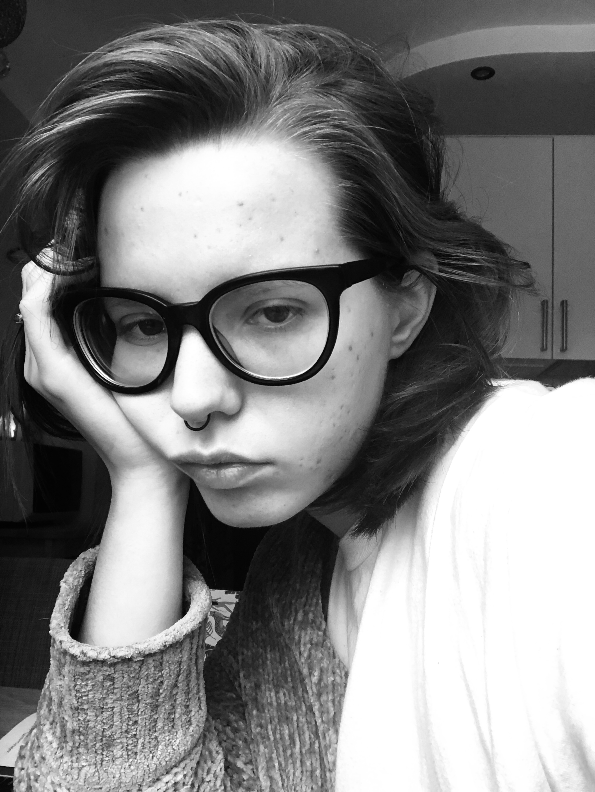

резюме
дата рождения: 16.07.2000
проживание: г. Москва
ключевые знания и навыки:

проживание: г. Москва
ключевые знания и навыки:
- вёрстка в Adobe InDesign;
- простые иллюстрации в Adobe Illustration.
- основы SMM-менеджмента;
- навыки упаковки книг и переговоров с блогерами.
- проходила стажировку в издательстве «Носорог» (2020 г.)
- помогала с продвижением в бюро «Литагенты существуют (2020-2021 гг)
мои проекты
работаю сейчас
комедия В. Маяковского "Клоп"